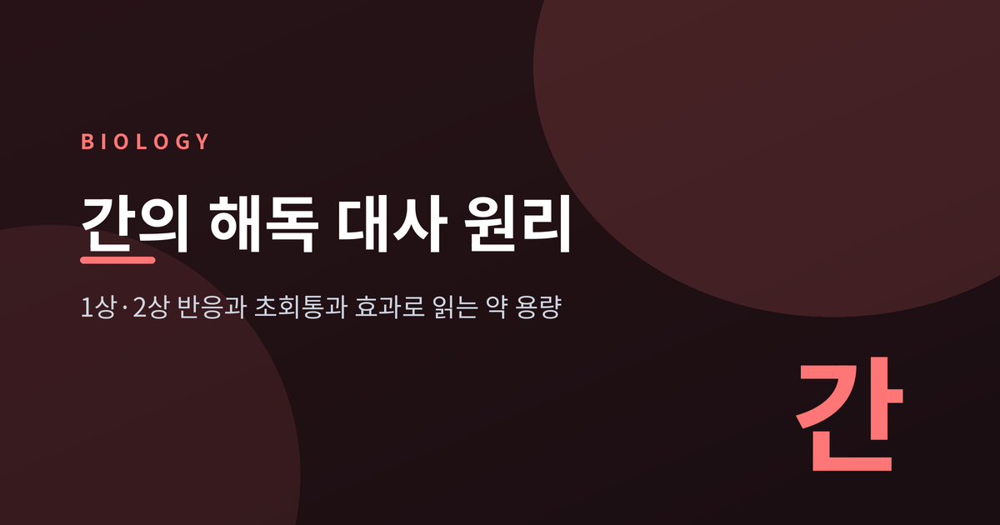
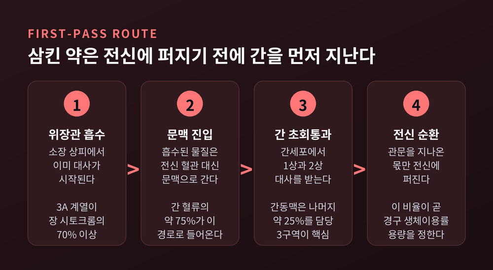
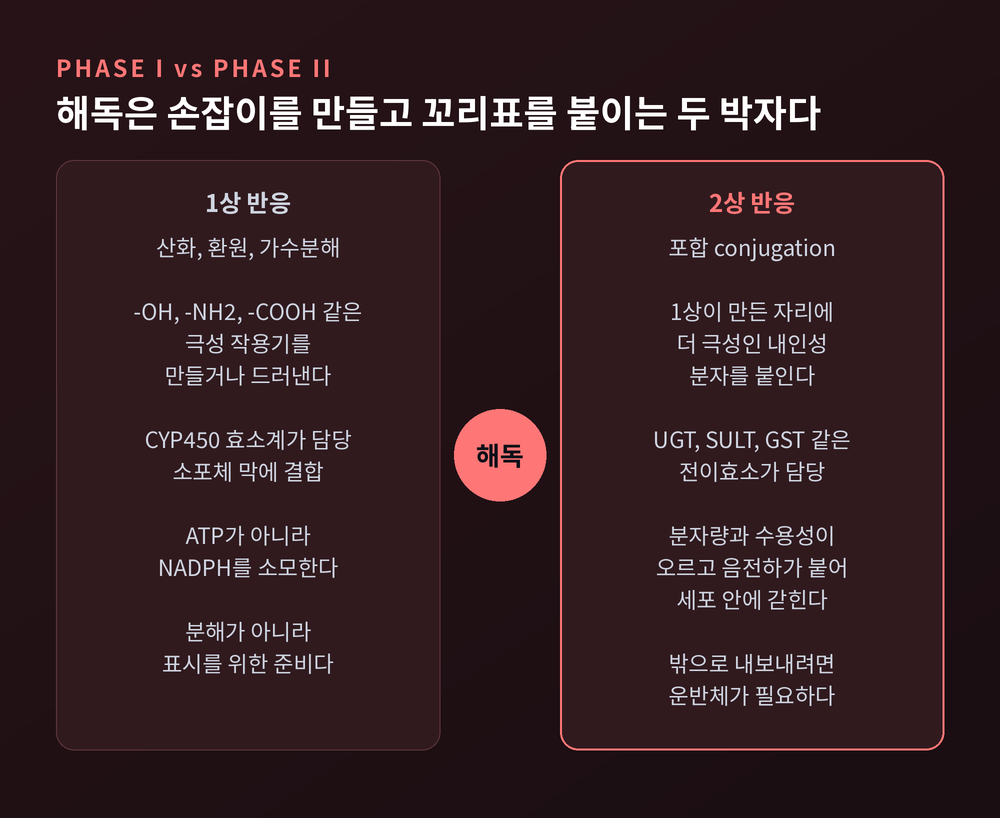
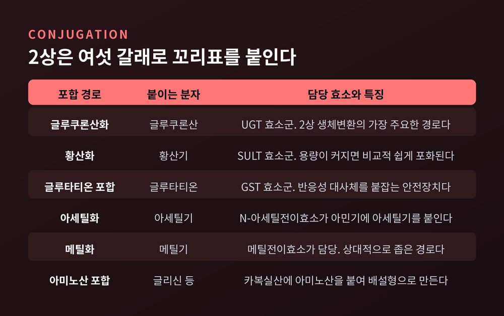
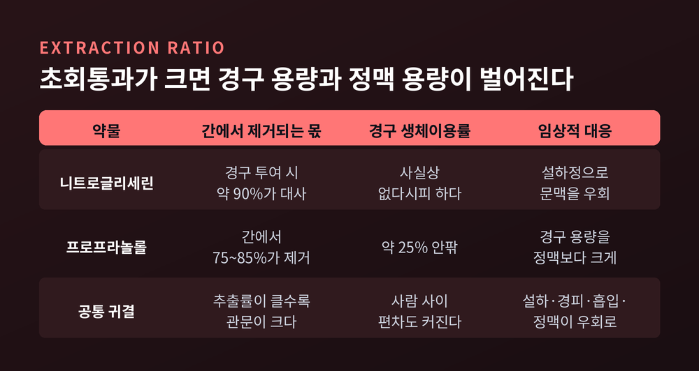
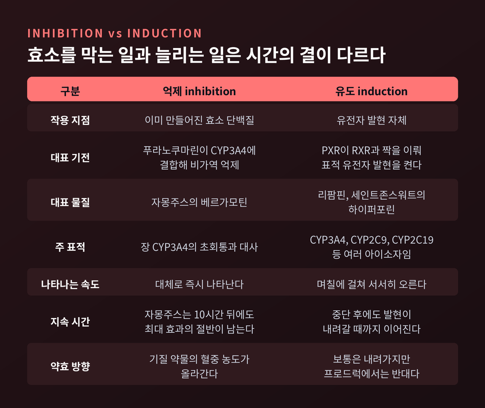
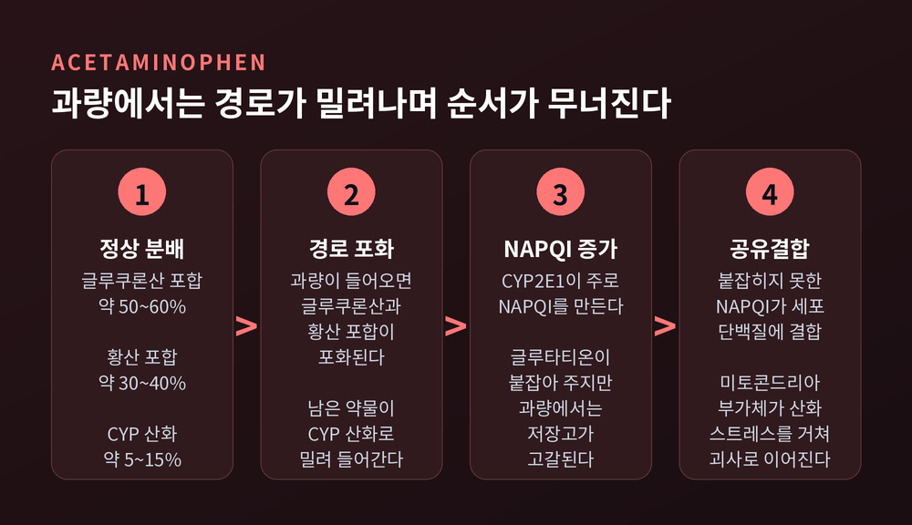

이번 글에서는 간이 약과 독을 처리하는 방식을 정리해 보겠습니다. 1상 반응과 2상 반응, 그리고 초회통과 효과라는 세 개의 축으로 풀어갑니다.
먼저 결론부터 세 줄로 적습니다.
생체변환의 대부분은 간에서, 그중에서도 간세포에서 일어납니다. 간세포는 간 질량의 약 80%를 차지하는 주된 세포입니다.
위치가 결정적입니다. 간은 두 갈래로 피를 받습니다. 문맥에서 약 75%, 간동맥에서 약 25%입니다.
문맥은 위장관에서 곧장 올라오는 혈관입니다. 우리가 삼킨 것은 전신 순환에 닿기 전에 반드시 간을 먼저 지나갑니다. 해부학적 배치 자체가 관문인 셈입니다.
간 소엽 안에서도 역할이 갈립니다. 중심정맥 주변인 3구역이 해독과 생체변환에 가장 크게 관여합니다.
물론 간만 일하는 것은 아닙니다. 신장, 폐, 그리고 소장 상피세포에서도 대사가 일어납니다. 뒤에서 다룰 자몽주스 이야기는 바로 이 소장 쪽에서 벌어지는 일입니다.

1상 반응은 크게 세 갈래입니다. 산화, 환원, 가수분해입니다.
목적은 분해가 아닙니다. 분자에 -OH, -NH2, -COOH 같은 극성 작용기를 새로 만들거나, 숨어 있던 것을 드러내는 일입니다. 다음 단계에서 무언가를 붙이려면 붙일 자리가 있어야 하기 때문입니다.
이 일을 맡는 것이 CYP450 효소계입니다. 간세포 소포체 막에 붙어 있는 효소군이고, CYP450을 이용한 1상 반응은 ATP가 아니라 NADPH를 씁니다.
사람은 기능하는 CYP 유전자를 57개 가지고 있습니다. 그런데 실제 약물 대사의 대부분은 여섯 개가 처리합니다. CYP1A2, CYP2C9, CYP2C19, CYP2D6, CYP2E1, CYP3A4입니다. 이 여섯이 전체 반응의 약 80~90%를 담당합니다.
그중에서도 CYP3A4가 압도적입니다. 사람 간에서 가장 풍부한 아이소자임이고, 시판 약물 가운데 약 절반의 산화 대사에 관여합니다. 다만 간 CYP450 전체에서 CYP3A4가 차지하는 비율은 자료마다 편차가 커서, 여기서는 "가장 풍부하다"는 선까지만 적겠습니다.
한 가지 예외를 기억해 둘 만합니다. 이미 -OH나 -NH2, -COOH를 가진 약물은 1상을 건너뛰고 곧장 2상으로 들어갑니다.

2상은 포합 반응입니다. 1상에서 만들어진 자리에 더 극성인 내인성 분자를 붙입니다.
동원되는 전이효소는 여럿입니다. UDP-글루쿠론산 전이효소가 글루쿠론산을, 황산전이효소가 황산을, 글루타티온 S-전이효소가 글루타티온을 붙입니다. 아세틸화, 메틸화, 글리신 포합도 여기에 듭니다.
가장 주요한 경로는 글루쿠론산화입니다. 황산화와 글루타티온 포합까지 셋을 묶어 2상의 3대 경로로 봅니다.
포합이 끝나면 분자량이 커지고, 수용성이 올라가고, 음전하가 붙습니다. 그 결과 막을 통과하지 못해 세포 안에 갇힙니다. 밖으로 내보내려면 운반체의 도움을 받아야 합니다.
예전에는 해독을 독을 부수는 일로 이해했습니다. 지금은 내보낼 수 있는 형태로 표시를 다는 일로 봅니다. 이 관점의 전환이 뒤에 나올 아세트아미노펜 이야기를 이해하는 열쇠가 됩니다.

간을 한 번 지날 때 제거되는 분율을 간 추출률이라고 부릅니다. 초회통과 대사의 크기를 재는 지표입니다.
추출률이 높은 대표 약물로는 니트로글리세린, 프로포폴, 프로프라놀롤, 리도카인이 꼽힙니다.
수치를 보면 감이 옵니다.
여기서 두 가지가 따라 나옵니다.
첫째, 초회통과가 큰 약일수록 경구 용량과 정맥 용량의 차이가 벌어집니다. 같은 혈중 농도를 만들려면 관문에서 잃을 몫까지 미리 얹어야 하기 때문입니다.
둘째, 초회통과가 큰 약일수록 사람 사이의 혈중 농도 편차도 커집니다. 관문이 클수록 그 관문의 개인차가 최종 결과에 크게 증폭됩니다.
우회하는 길도 있습니다. 설하, 직장, 경피, 흡입, 정맥 투여는 문맥을 거치지 않거나 부분적으로만 거칩니다. 니트로글리세린 설하정이 교과서적인 사례입니다.

자몽주스는 CYP3A4로 대사되는 약물의 전신 노출량을 늘립니다. 흔히 간 이야기로 오해하지만, 주 표적은 장의 CYP3A4입니다.
전제가 되는 사실이 있습니다. CYP3A4는 소장 상피세포에서 발현되는 주된 CYP 형태이고, 3A 계열이 그 세포의 시토크롬 함유 효소 가운데 70% 이상을 차지합니다. 삼킨 약은 간에 닿기도 전에 장벽에서 이미 상당량이 대사되는 셈입니다.
원인 물질은 푸라노쿠마린류입니다. 푸라노쿠마린만 제거한 자몽주스로는 상호작용이 재현되지 않았습니다. 이 실험이 인과를 확정했습니다.
억제 방식이 까다롭습니다. 푸라노쿠마린은 CYP3A4에 결합해 기전기반 비가역적 억제를 일으키고, 효소 자체를 빠르게 분해시킵니다. 경쟁적 억제도 함께 작용합니다. 베르가모틴이 가장 강한 기전기반 억제제로 지목됩니다.
비가역적이라는 말의 무게는 지속 시간에서 드러납니다. 펠로디핀에 자몽주스 200mL를 함께 준 연구에서, 간격이 4시간일 때 상호작용이 가장 컸습니다. 10시간을 벌리면 최대 효과의 절반, 하루를 벌려도 4분의 1이 남았습니다.
효소가 새로 만들어질 때까지 영향이 이어진다는 뜻입니다. "아침에 마셨으니 저녁 약은 괜찮다"는 통념이 위험한 이유가 여기 있습니다.
효소를 막는 일이 있으면, 늘리는 일도 있습니다.
유도제는 CYP 아이소자임과 약물 수송체의 발현 자체를 늘립니다. 결과적으로 함께 먹은 약의 청소율이 크게 달라집니다.
기전은 핵수용체를 거칩니다. 리팜핀과 세인트존스워트는 모두 PXR이라는 수용체에 결합합니다. PXR이 활성화되면 핵으로 들어가 RXR과 짝을 이루고, CYP3A4를 비롯한 표적 유전자의 프로모터에 붙어 발현을 켭니다.
범위도 넓습니다. 세인트존스워트는 CYP3A4, CYP2C9, CYP2C19를 유도합니다. 리팜피신은 CYP2A6, CYP2B6, CYP2C8, CYP2C9, CYP2C19, CYP3A4, CYP3A7 유전자 근처에서 유도 영역이 확인되었습니다.
억제와 유도는 시간의 결이 다릅니다. 억제는 효소 단백질에 직접 작용하므로 대체로 즉시 나타납니다. 유도는 유전자 발현부터 새 단백질 합성까지 거쳐야 하므로 며칠에 걸쳐 서서히 올라오고, 서서히 가라앉습니다.
방향이 뒤집히는 경우도 있습니다. 클로피도그렐은 프로드럭입니다. 혈소판 억제는 활성 대사체가 만들어 내고, 그 활성화의 일부를 CYP2C19가 맡습니다. 그래서 리팜핀이 CYP2C19를 강하게 유도하면 활성 대사체가 늘고 출혈 위험이 올라갈 수 있습니다.
"효소를 늘리면 약효가 준다"는 도식이 언제나 성립하지는 않습니다.

해열진통제로 흔히 쓰는 아세트아미노펜은 1상과 2상의 균형을 보여 주는 좋은 사례입니다.
정상 용량에서 대사 분배는 이렇습니다.
평상시에는 2상이 90% 가까이를 처리합니다. 1상 산화는 소수 경로입니다.
문제는 그 소수 경로의 산물입니다. CYP2E1이 주로, CYP1A2와 CYP3A4가 거들어 아세트아미노펜을 NAPQI라는 반응성 대사체로 바꿉니다.
NAPQI는 반감기가 극히 짧고, 정상 상태에서는 글루타티온과 곧바로 결합해 무독화됩니다. 글루타티온이 설프하이드릴 공여체로 붙잡아 주는 것입니다.
과량이 들어오면 순서가 무너집니다.
에탄올이 위험한 이유도 여기서 설명됩니다. 쥐 간 실험에서 에탄올은 미토콘드리아 글루타티온을 선택적으로 고갈시켜 아세트아미노펜 독성을 키웠습니다.
해독제인 N-아세틸시스테인은 두 방향으로 작용하는 것으로 여겨집니다. 글루타티온 합성의 기질이 되어 주고, NAPQI를 직접 붙잡습니다.

효소의 활성은 사람마다 다릅니다. 유전다형성 때문입니다.
가장 잘 알려진 사례가 CYP2D6와 코데인입니다. 코데인 자체는 진통 효과가 약하고, CYP2D6가 모르핀으로 바꿔 주어야 작동합니다.
빈도는 인구집단에 따라 크게 갈립니다. 정상기능 대립유전자 조합을 가진 사람이 43~67% 정도이고, 백인 기준 저대사자는 약 5~10%, 초고속대사자는 약 1~7%로 보고됩니다. 반면 중동 지역 보고에서는 저대사자가 0.91%, 초고속대사자가 11.2%로 정반대에 가깝습니다.
하나의 숫자로 요약할 수 없다는 점이 오히려 중요한 결론입니다.
클로피도그렐도 비슷합니다. CYP2C19 기능이 떨어지는 대립유전자를 가진 사람은 활성 대사체가 덜 만들어져 항혈소판 효과가 약해질 수 있습니다.
한 가지 솔직히 덧붙이자면, 이번에 확인한 자료 범위에서는 한국인 집단의 CYP2D6·CYP2C19 빈도에 대한 신뢰할 만한 수치를 찾지 못했습니다. 그래서 이 글에서는 다루지 않았습니다.
정리하면 이렇습니다.
간의 해독은 두 박자로 움직입니다. 1상이 손잡이를 만들고, 2상이 꼬리표를 붙입니다. 그리고 이 두 박자가 문맥이라는 관문 위에서 작동하기 때문에, 우리가 삼킨 약의 상당 부분은 몸에 퍼지기도 전에 사라집니다.
자몽주스도, 아세트아미노펜 독성도, 사람마다 다른 약효도 결국 같은 이야기의 변주였습니다. 어느 한 효소의 활성이 흔들리면 나머지 계산이 전부 어긋납니다.
그래서 "약의 용량은 몸이 무엇을 견디는지가 아니라, 간이 무엇을 얼마나 지우는지에 맞춰 정해진 숫자"라고 이해하는 편이 정확합니다.
한 가지만 분명히 해 두겠습니다. 이 글은 원리를 이해하기 위한 일반 교양 설명입니다. 복용 중인 약의 용량, 병용 여부, 음식과의 간격 같은 개인의 판단은 반드시 의사나 약사와 상의하시기 바랍니다. 같은 성분이라도 사람에 따라 결론이 달라지는 영역이기 때문입니다.
간이 하는 일을 알고 나면 약을 대하는 태도가 조금 달라집니다. 설명서의 작은 글씨가 왜 그렇게 깐깐한지, 이제는 짐작이 되실 것입니다.